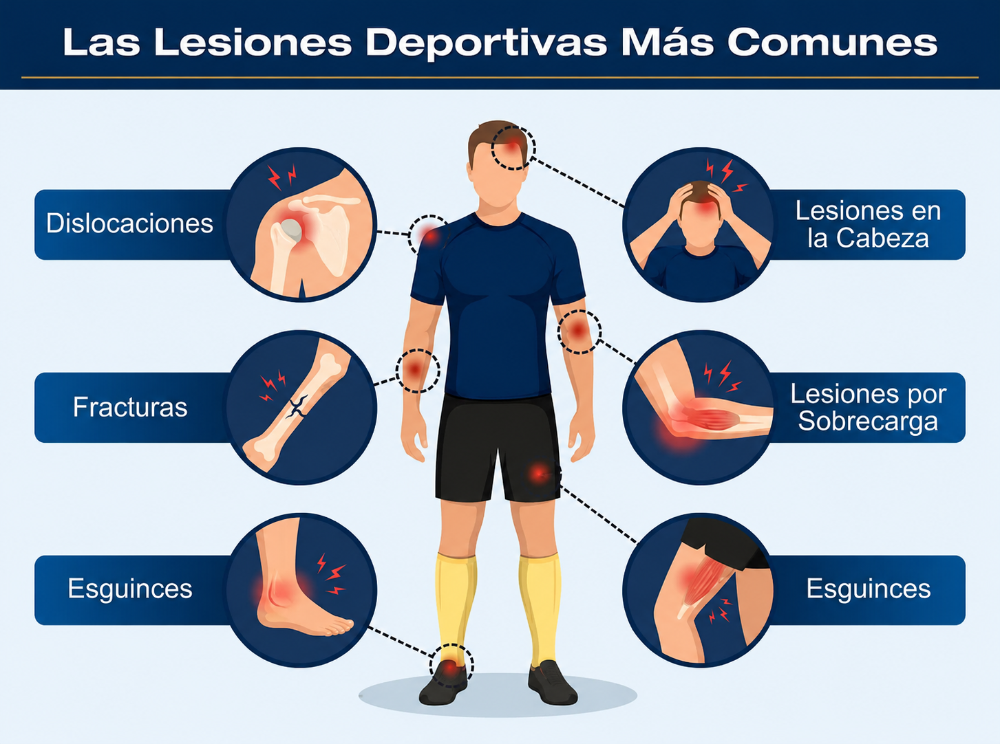

Primeros Auxilios: La diferencia entre la vida y la muerte
Los primeros auxilios son el conjunto de actuaciones y técnicas que permiten la atención inmediata de una persona accidentada o que ha sufrido una repentina enfermedad, hasta que pueda ser atendida por un equipo médico especializado.
Actuar de forma rápida, serena y correcta en los primeros minutos de una emergencia puede marcar la diferencia entre la vida y la muerte, o entre una recuperación completa y secuelas permanentes. Por eso, capacitarse en primeros auxilios es una responsabilidad social y un acto de solidaridad.
En esta capacitación abordaremos los fundamentos de la cadena de supervivencia, el reconocimiento de emergencias, la reanimación cardiopulmonar (RCP) y el manejo de situaciones críticas más comunes.

Los signos vitales son mediciones de las funciones más básicas del cuerpo humano. Son fundamentales para evaluar el estado general de salud de una persona o identificar emergencias médicas.
Un botiquín básico debe estar preparado para tratar cortes menores, rasguños, quemaduras, esguinces y otras lesiones comunes. Un kit bien equipado debe incluir:
- Material de curación: Gasas estériles de diferentes tamaños, vendas elásticas y de rollo, tiritas (curitas), algodón y esparadrapo (cinta adhesiva médica).
- Antisépticos: Alcohol isopropílico, agua oxigenada o soluciones yodadas para desinfectar heridas.
- Herramientas y accesorios: Tijeras de punta redonda, pinzas, guantes desechables (preferiblemente de nitrilo o látex), y un termómetro.
- Otros: Suero fisiológico (para limpiar heridas o los ojos), bolsas de frío/calor instantáneo, y un manual básico de primeros auxilios.
Cada tipo de trauma requiere una respuesta específica para evitar complicaciones mayores antes de que llegue la ayuda médica profesional.

La RCP es una maniobra vital que se utiliza cuando una persona ha dejado de respirar o su corazón ha dejado de latir (paro cardiorrespiratorio).
Pasos básicos (Hands-only / Solo manos):
- Evaluar la seguridad y la respuesta: Asegurar el área. Preguntar en voz alta "¿Se encuentra bien?" y tocar a la persona por los hombros.
- Llamar a emergencias: Si no responde y no respira (o solo jadea), llamar inmediatamente a los servicios de emergencia (ej. 911).
Compresiones torácicas:
- Colocar el talón de una mano en el centro del pecho (mitad inferior del esternón) y la otra mano encima, entrelazando los dedos.
- Mantener los brazos rectos y usar el peso del cuerpo para comprimir el pecho al menos 5 centímetros de profundidad.
- Realizar compresiones a un ritmo de 100 a 120 por minuto (el ritmo de la canción "Stayin' Alive").
- Permitir que el pecho vuelva a su posición original entre cada compresión. Continuar hasta que llegue la ayuda o la persona reaccione.

Se aplica cuando una persona sufre una obstrucción severa de las vías respiratorias por un objeto o alimento, impidiéndole hablar, toser o respirar (suele llevarse las manos al cuello).
Cómo realizarla en adultos y niños mayores:
- Colocarse detrás de la persona y rodear su cintura con ambos brazos.
- Formar un puño con una mano y colocar el lado del pulgar justo por encima del ombligo de la persona, muy por debajo del esternón.
- Agarrar el puño con la otra mano.
- Realizar compresiones rápidas y fuertes hacia adentro y hacia arriba, como si intentaras levantar a la persona del suelo.
- Repetir estas compresiones abdominales hasta que el objeto sea expulsado y la persona pueda respirar, o hasta que pierda el conocimiento (en cuyo caso se debe iniciar inmediatamente la RCP).